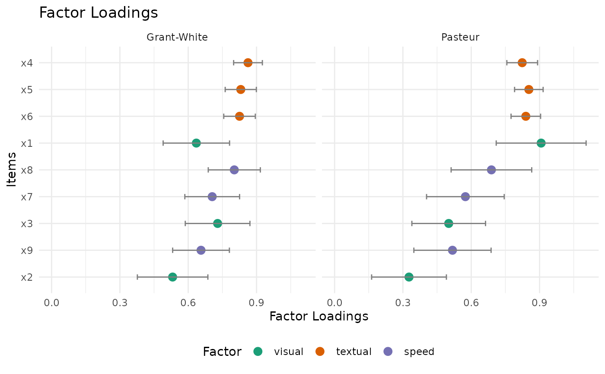

Creates a dot plot of standardized factor loadings
for a fitted lavaan model, including CFA and SEM.
The plot uses only the measurement model portion
(=~ parameters), along with optional confidence
intervals for each item. If the model does not contain
=~ parameters, the function errors with a clear message.
Arguments
- fit
A fitted
lavaanmodel object (including CFA and SEM).- sort
Logical; if
TRUE, sorts items by loading size. Defaults toTRUE.- group_by
Logical; if
TRUEand the model has multiple factors, groups the items by factor. Defaults toTRUE.- standardized
Logical; if
TRUE, uses standardized loadings. Defaults toTRUE.- ci
Logical; if
TRUE, includes confidence intervals. Defaults toTRUE. Also acceptsCIvia...for backward compatibility.- autofit
Logical; if
TRUE, computes and applies x-axis limits viacoord_cartesian()based on loadings (and CIs when available). If all values are non-negative, the lower limit is set to 0; if all values are non-positive, the upper limit is set to 0. For standardized loadings within[-1, 1], the limits are extended to include the nearest boundary to keep the standardized scale visible. IfFALSE, the x-axis limits are not modified and ggplot2 determines the range.- ci_bounds
Controls how confidence intervals are handled for standardized loadings when
ci = TRUEandautofit = TRUE."extend"draws full CIs (axis may extend beyond[-1, 1]);"arrow"constrains the x-axis to[-1, 1](or[0, 1]/[-1, 0]when all values are non-negative/non-positive), clips CIs to that range, and adds arrows to indicate off-scale intervals. If any standardized point estimate is outside[-1, 1],"arrow"falls back to"extend".- facet_by
Character string controlling faceting for SEM contexts with grouping metadata. Options:
"none"(default): no faceting."group": facet bylavaangroup."level": facet bylavaanlevel (multilevel models)."group_level": facet by combined group and level. If requested metadata is unavailable, a message is shown whenverbose = TRUEand plotting continues without faceting.
- verbose
Logical; if
TRUE, prints informational messages and warnings (for example, when the model did not converge). Defaults toTRUE. WhenFALSE, non-fatal messages and warnings from internallavaanextraction calls are suppressed; errors are still raised.- ...
Additional arguments passed to
ggplot2::ggplot.
See also
plot-methods for an overview of plotting in the package.
plot.lavaan()for more lavaan object plots.
Examples
if (requireNamespace("lavaan", quietly = TRUE) &&
requireNamespace("ggplot2", quietly = TRUE)) {
library(lavaan)
library(psymetrics)
hs_model <- 'visual =~ x1 + x2 + x3
textual =~ x4 + x5 + x6
speed =~ x7 + x8 + x9'
fit <- cfa(hs_model, data = HolzingerSwineford1939, estimator = "MLR")
plot_factor_loadings(fit)
sem_model <- 'visual =~ x1 + x2 + x3
textual =~ x4 + x5 + x6
speed =~ x7 + x8 + x9
textual ~ visual
speed ~ textual'
fit_sem <- sem(sem_model, data = HolzingerSwineford1939, group = "school")
plot_factor_loadings(fit_sem, facet_by = "group")
} else {
message("Please install 'lavaan' and 'ggplot2' to run this example.")
}
